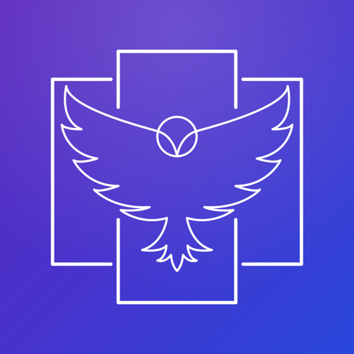
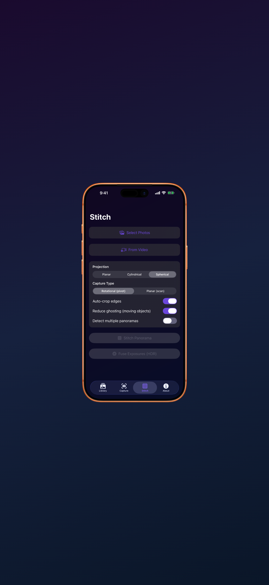
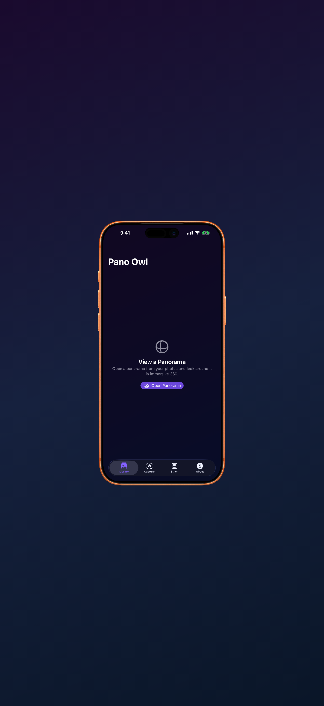
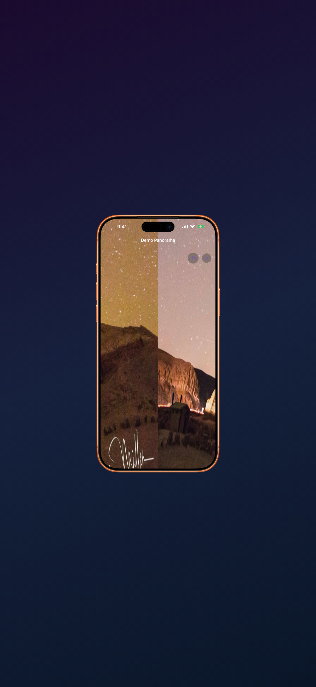
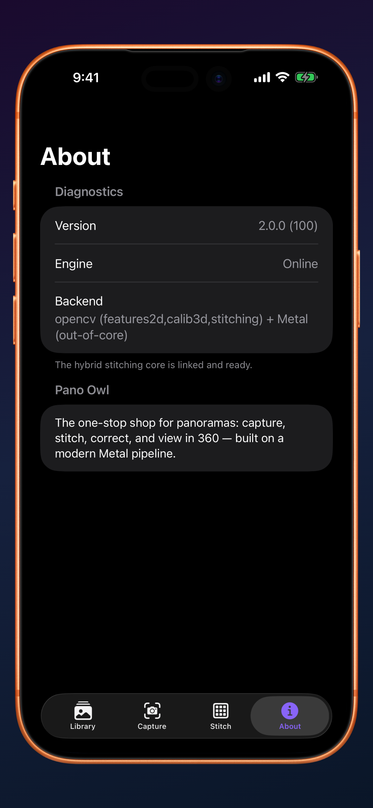

🦉 Pano Owl
The one-stop shop for panoramas — capture, stitch, correct, and view in immersive 360°. Rebuilt from the ground up on a modern Metal pipeline that reliably combines any number of photos into a single seamless panorama, while preserving the quality of your originals.
Ready for iOS 27 / iPadOS 27 / macOS 27Availability · Pano Owl isn't sold on the App Store in the European Union — under the EU Digital Services Act, selling there requires publishing a trader listing with personal contact details, which I've opted out of as an independent developer. It's available in every other App Store territory.

Everything Panoramas
Modern Metal stitching — from a quick eye-level sweep to a full 360° gigapixel scene
On-screen motion guidance walks you through every frame and auto-captures when you're on target. Use any lens — including telephoto — and on-device blur detection flags soft shots to re-take on the spot.
Planar, cylindrical, and real spherical (equirectangular) projections. Partial arcs to full 360 — stitch whatever you shoot. Exports carry standard GPano metadata so they render correctly in web viewers, Photos, and on Apple Vision Pro.
An out-of-core tiled engine stitches huge, high-resolution panoramas that wouldn't fit in memory — RAM stays bounded no matter how big the panorama gets. No more downscaling to make it fit.
Fuse exposure brackets into one perfectly exposed image, and keep moving objects from doubling into ghosts at the seams. Reliable blends, even in tricky light.
Look around your panoramas right in the app — drag, or move your device to glance around the scene. Open any panorama from your photo library and step inside it.
Straighten the horizon, drag the corners to fix distortion, and fine-tune the crop. Turn a video into a panorama — Pano Owl extracts the cleanest frames for you.
Drop in a mixed pile of photos and Pano Owl detects and stitches each separate panorama on its own — no need to sort your shots first.
Capture saves GPS, altitude, and compass heading with your panorama, written as standard metadata so web and Vision Pro viewers orient it correctly.
The same Metal engine on every device. Capture on iPhone, then stitch gigapixel scenes and batch your library on the Mac.
Mount your phone, follow the on-screen targets, and Pano Owl fires each frame the moment you're on point — sized to your lens, with the right overlap. Blurry frame? It catches it and asks for a re-take, right there.
Capture now, stitch later. Your location and compass heading ride along with every shot.

Choose planar, cylindrical, or true 360° spherical. Pano Owl matches features across any number of frames, warps them on the GPU, and blends a seamless result — preserving the detail of your originals.
A tiled, out-of-core engine means resolution isn't capped by your device's memory. Gigapixel scenes, on a phone.

Finished a sphere? Look around it immersively in the app — drag or move your device to glance in any direction. Open existing panoramas from your library to relive them in 360.
Every export carries GPano metadata, so the same file looks right in web viewers, the Photos app, and on Apple Vision Pro.

See It In Action
Your panorama library, the stitch studio, and the immersive 360 viewer

Got Questions?
As many as you like. Pano Owl matches features across the whole set, and its out-of-core tiled engine keeps memory bounded — so the output resolution isn't capped by your device. From a two-shot sweep to a full 360° gigapixel scene.
Yes — true equirectangular (spherical) output, plus cylindrical and planar. Partial arcs and full 360 both work. Exports include standard GPano metadata, so they render correctly in web viewers, the Photos app, and on Apple Vision Pro.
Either rotational (pivoting on a tripod or in your hand) or a flat scan across a subject. The guided capture mode tracks your motion and auto-captures each frame with the right overlap, and flags blurry shots so you can re-take them.
Yes. Pick a video and Pano Owl extracts the cleanest, well-spaced frames automatically, then stitches them like any other set.
The pipeline works in high bit depth and warps at full resolution, so you keep the detail of your source photos rather than downscaling to fit memory. You can also straighten, drag-to-correct distortion, and adjust the crop before exporting.
iPhone and iPad, with a native Mac app sharing the same Metal engine for heavier gigapixel work. Guided camera capture is on iPhone & iPad; stitching, correcting, and viewing work everywhere.
Private by Design
No tracking. No ads. Your panoramas are stitched right on your device.